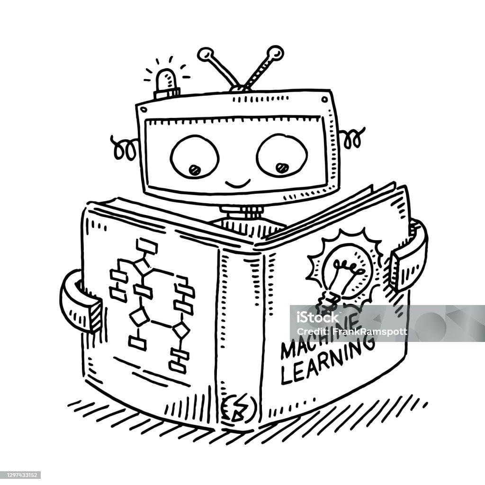
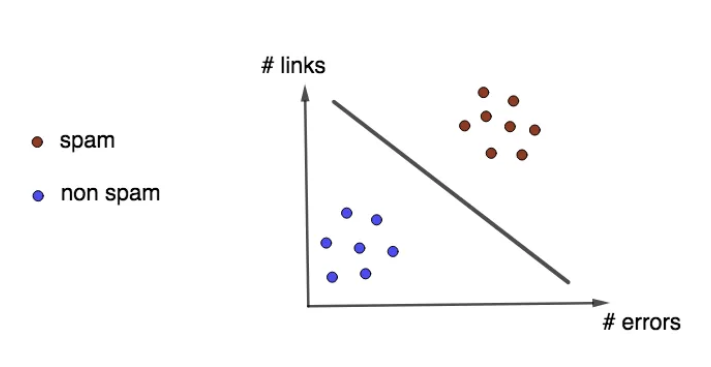
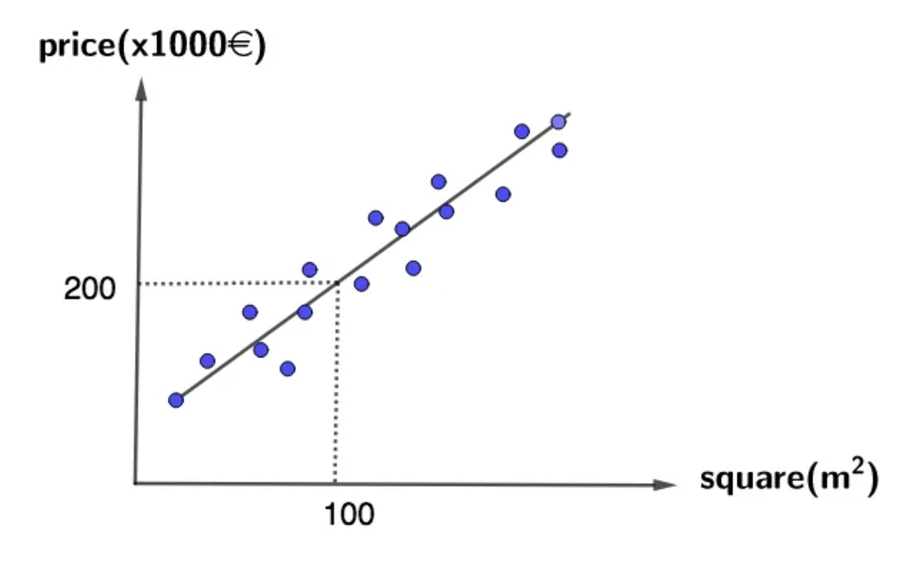
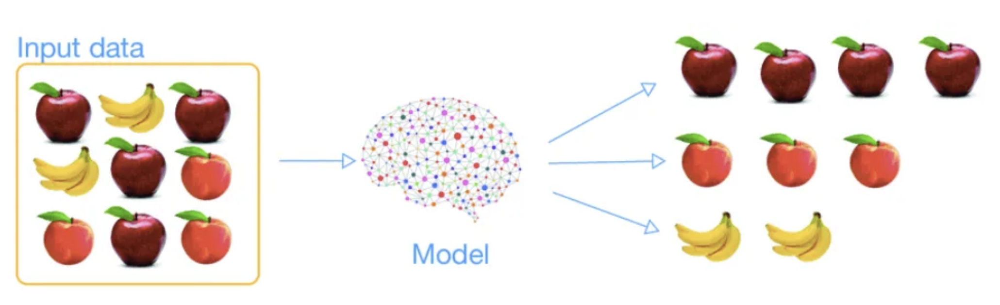

Welcome to the Machine Learning World! This blog post covers all the basic concepts of Machine Learning that you’ll need to know as a beginner.

In today’s world, Machine Learning applications are omnipresent, seamlessly integrating into various aspects of our daily lives. Consider, for instance, the personalized search experience on Google, where Machine Learning algorithms suggest the most relevant results based on your input keywords. Similarly, major platforms like Facebook, YouTube, and Amazon employ recommendation systems to propose products tailored to individual user preferences. Notably, Apple utilizes Machine Learning algorithms for facial and fingerprint recognition, enabling users to unlock their devices without relying on traditional passwords. In essence, Machine Learning has significantly enhanced the convenience and efficiency of our everyday activities.
What is Machine Learning?
In 1959, Arthur Samuel provided a defining perspective: “Machine Learning is the field of study that gives the computer the ability to learn without explicitly programmed.” A more technical definition emerged in 1997 from Tome Michel: “A computer program is said to learn from experience E with respect to some class of tasks T and performance measure P if its performance at tasks in T, as measured by P, improves with experience E.”
In general terms, Machine Learning (ML) stands as a subset of Artificial Intelligence (AI) with a primary focus on crafting algorithms and models. These models empower computers to learn autonomously and make predictions or decisions without explicit programming. The overarching goal of machine learning is to develop systems capable of learning from data, enhancing their performance over time.
Why Machine Learning?
To underscore the significance of Machine Learning, let’s examine the case of spam email recognition. Initially, one must scrutinize the characteristics of spam emails, such as errors, links, and specific keywords like “bank card,” “free,” and “congratulation.” The traditional approach involves analyzing these traits and crafting a program to detect them consistently across all emails. This results in lengthy and intricate code that requires considerable effort for maintenance.
In contrast, Machine Learning automates the exploration of spam email characteristics, resulting in significantly shorter and more manageable code. Moreover, machine learning algorithms consistently outperform traditional methods.
In summary, several reasons advocate for the adoption of Machine Learning algorithms over traditional methods:
Efficiency: Machine learning algorithms are faster, demand less computational power, and deliver superior results compared to their traditional counterparts.
Problem-solving Capability: Machine learning techniques can tackle complex problems that traditional methods may find challenging.
Adaptability: Machine learning systems exhibit adaptability to new data, particularly valuable in fluctuating environments.
Exploration of Complicated Problems: Machine learning algorithms excel in exploring intricate problems with large datasets.
It’s crucial to note that building a Machine Learning model requires a substantial volume of training data for accurate learning. The model often requires thousands of diverse data points to achieve high accuracy, emphasizing the paramount importance of data in the realm of Machine Learning and Data Science.
Types of Machine Learning Algorithms
Machine learning algorithms can be broadly classified into three primary types: supervised learning, unsupervised learning, and reinforcement learning. Let’s delve into each category:
Supervised Learning:
Definition: In supervised learning, the algorithm undergoes training using a labeled dataset where each input corresponds to a specific output. The objective is for the algorithm to discern the relationship between inputs and outputs, enabling it to make predictions on new, unseen data.
Examples:
Classification: Predicting discrete labels or categories (e.g., spam or not spam).

Regression: Predicting continuous values (e.g., forecasting house prices).

Unsupervised Learning:
Definition: Unsupervised learning entails training the algorithm on an unlabeled dataset. The algorithm’s aim is to discover patterns, structures, or relationships within the data without explicit guidance on what to identify.

Examples:
Clustering: Grouping similar data points together (e.g., customer segmentation).
Dimensionality Reduction: Streamlining the number of features while retaining crucial information.
Reinforcement Learning:
Definition: Reinforcement learning involves an agent interacting with an environment. The agent takes actions, and the environment responds with feedback in the form of rewards or penalties. The ultimate goal is for the agent to learn optimal strategies that maximize cumulative rewards over time.
Examples:
Game Playing: Acquiring skills in playing games through rewards for successful moves.
Robotics: Training robots to execute tasks based on feedback derived from their actions.
Use Cases of Machine Learning
Machine learning finds practical applications across a wide array of industries, spanning manufacturing, retail, healthcare, life sciences, travel and hospitality, financial services, and energy, feedstock, and utilities. Examples of these applications include:
Manufacturing: Utilizing machine learning for predictive maintenance and condition monitoring.
Retail: Implementing machine learning for upselling and cross-channel marketing strategies.
Healthcare and Life Sciences: Applying machine learning for disease identification and risk assessment.
Travel and Hospitality: Employing machine learning for dynamic pricing mechanisms.
Financial Services: Utilizing machine learning for risk analytics and regulatory compliance.
Energy, Feedstock, and Utilities: Leveraging machine learning for optimizing energy demand and supply.